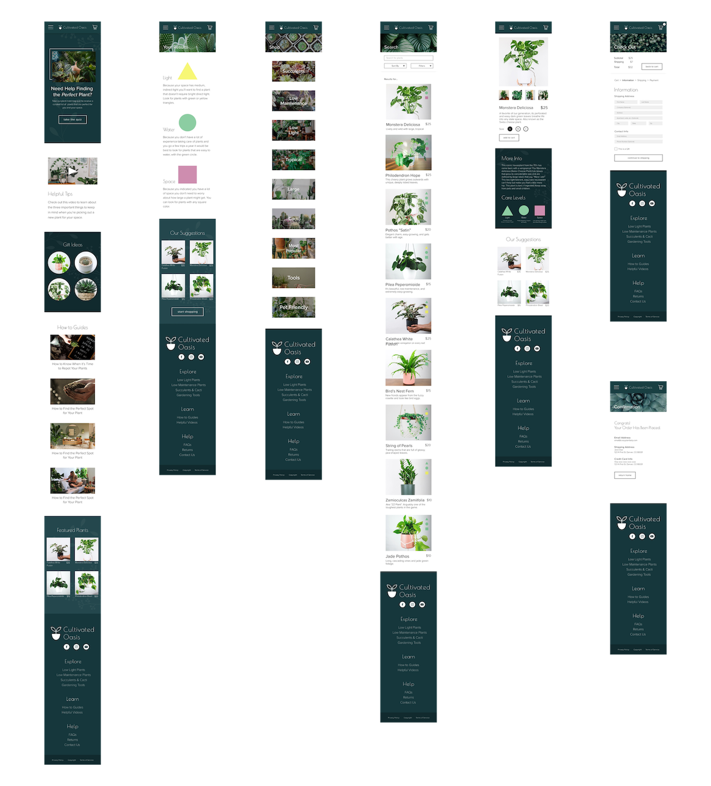

Cultivated Oasis
a responsive website for ordering plants

Challenge: When people don’t have a lot of experience with plants, going to purchase one can be on overwhelming experience because there are so many options and some are more difficult to take of than others.
Solution: Cultivated Oasis helps fix that problem by providing a quiz people can take that matches them to plants that would be ideal for their space.
Take the quiz to receive suggestions for the ideal plant for you and your space.
The results page walks you through how to use the triangle, square, and circle icons to help you find the perfect plant.
You can look at those icons on each image to quickly know whether the plant is a good fit.
The icons are also located on each plant page so you can have a more detailed explanation.
Personas

User Journey Map
Pain Points
1) Feeling Overwhelmed
I found that people who don’t know a lot about plants often feel overwhelmed with all of their choices.
2) Doesn’t want the plant to die
Most people buying plants want to make sure it will actually be able to survive in their space.
While conducting user research, I found that most people who don’t know a lot about plants can feel overwhelmed with all of their choices. Some feel discouraged because they don’t want to pick a plant that’s difficult to take care of and ends up dying soon after they purchase it. They also are unsure of the best plants that will fit in their space.
Crazy 8s Ideating
Sitemap
Sketching
Wireframes
Usability Testing
User testing went fairly smoothley for my low fidelity prototype, most users were able to get through the flow without any issues. The one area people started to get stuck at was after they added the plant to the cart, it took them a second to figure out the next step was going to the cart to check out so I added a notification to make it more obvious.
Mockups

High Fidelity Prototype
Desktop
Mobile
Next Steps
I plan to continue to iterate on my designs and perform more usability testing. I'd like to work on redesigning the quiz page and adding a new symbol to each plant on the search page that indicates whether they're pet friendly or not. I also want to add a feature that tells people what each of the triangle, square, and circle symbols stand for when they hover them on the search page.
Sources
Icons - Noun Project
Images - Unsplash